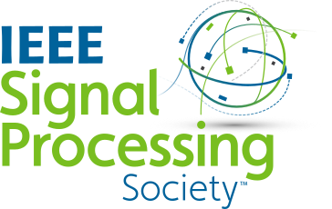
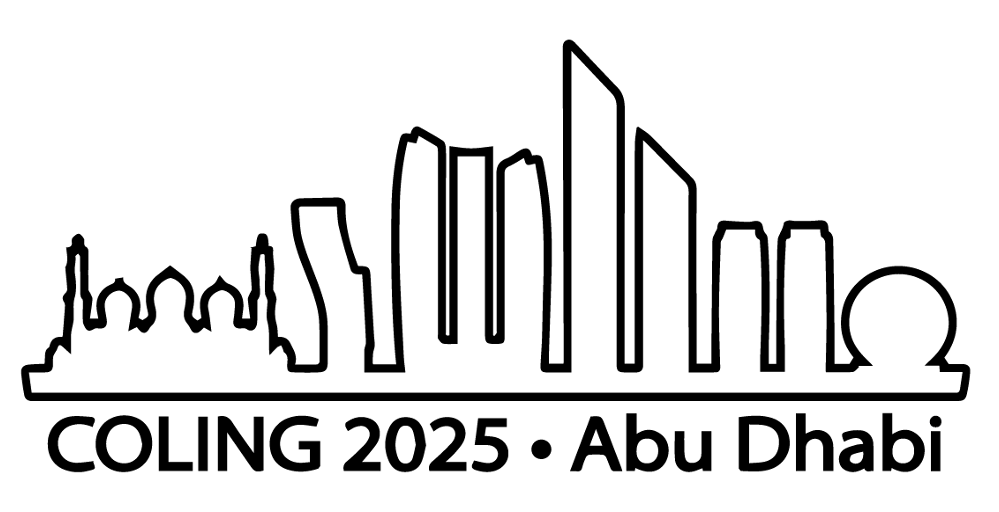

Xiaomi-Robotics-1: Scaling Vision-Language-Action Models with over 100K Hours of Real-World Trajectories
Core Contributor: Qiao Sun · Xiaomi Robotics Team
Scaling robotic learning with over 100K hours of real-world manipulation trajectories.
Researcher, Robot Foundation Model Team · Xiaomi Robotics
I am a Researcher at the Robot Foundation Model Team, Xiaomi Robotics. Selected for Xiaomi's TOP Talent Program, I contribute to Xiaomi-Robotics-1. My research focuses on scalability in embodied learning, aiming to build robotic systems that generalize robustly across diverse tasks and environments.
Specifically, I am currently exploring two directions to advance scalable robot learning: (1) leveraging large-scale human data to unlock generalizable manipulation policies, and (2) developing unified visual-tactile representations to enable transferable physical grounding. Previously, I was a Visiting Researcher at Harvard University and MIT-IBM Watson AI Lab under Prof. Chuang Gan and Prof. Yilun Du. I also work closely with Haoyu Zhen. Earlier, I was a Research Intern at Shanghai AI Laboratory. I received my M.S. in Electrical and Computer Engineering from Fudan University, and a B.S. in Civil Engineering with a degree in Financial Management from Tianjin University.
Proud to be a core contributor to Xiaomi-Robotics-1, scaling VLA learning with over 100K hours of real-world trajectories. Visit the official website.
Representing Xiaomi Robotics at ICRA 2026, with visits to ETH Zurich and Xiaomi Europe R&D Center.
Action Images: End-to-End Policy Learning via Multiview Video Generation is now on arXiv.
Xiaomi-Robotics-0, an open-sourced VLA model with real-time execution.
TesserAct: Learning 4D Embodied World Models was accepted at ICCV 2025.
Paper, code, model, and website are publicly available.
Served as an on-site volunteer at COLING 2025 in Abu Dhabi.
A first-authored paper was accepted at COLING 2025.
Served as a reviewer for ACL ARR.
Presented MiniConGTS at EMNLP 2024 in Miami.
For a complete list of publications and projects, see my Google Scholar profile.
Rui Cai, Jun Guo, Xinze He, Piaopiao Jin, Jie Li, Bingxuan Lin, Futeng Liu, Wei Liu, Fei Ma, Kun Ma, Feng Qiu, Heng Qu, Yifei Su, Qiao Sun, Dong Wang, Donghao Wang, Yunhong Wang, Rujie Wu, Diyun Xiang, Yu Yang, Hangjun Ye, Yuan Zhang, Quanyun Zhou
* Denotes Equal Contributions
Reviewer for NeurIPS 2025-2026, ICML 2026, CVPR 2026, ICLR 2026, IEEE/ACM TASLP, and ACL ARR (2024-2025).
Conference service: ACL SRW 2025, COLING 2025, and EMNLP 2024.


Email: qiaosun22@m.fudan.edu.cn
GitHub: github.com/qiaosun22
Location: 220 Handan Rd., Yangpu, Shanghai, China
WeChat: Please scan this QR Code .